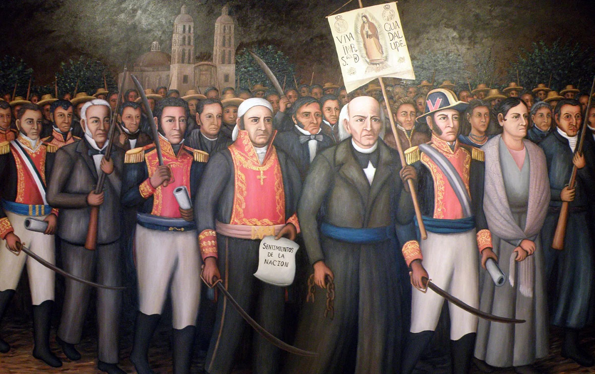
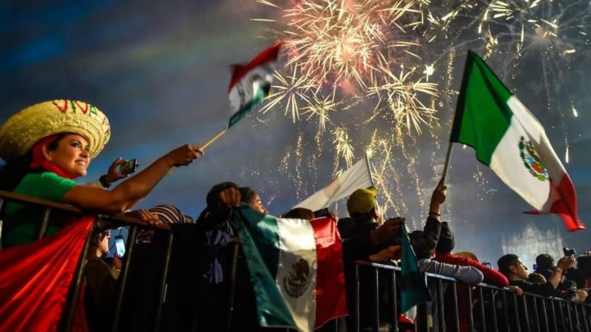

El 15 de septiembre se celebra la noche del Grito de Independencia, la tradición que conmemora el llamado que hizo el cura Miguel Hidalgo y Costilla en 1810 para iniciar la lucha por la independencia de México.
¿Qué se hace este día?
- El Grito: Las autoridades de gobierno (el presidente, gobernadores y alcaldes) salen a los balcones de los palacios de gobierno a dar los vivas patrios y hacer sonar las campanas.
- Verbena popular: Las plazas principales se llenan de música en vivo, juegos pirotécnicos, banderas y antojitos mexicanos como pozole, tamales y tacos. En Ciudad Juárez, por ejemplo, el festejo oficial se realizará en la avenida Abraham Lincoln con la presentación del grupo Bronco.
- Clases y trabajo: De acuerdo con la Secretaría de Educación Pública (SEP), el 15 de septiembre sí hay clases y las actividades laborales se realizan de manera normal; el día de descanso obligatorio es el 16 de septiembre.
Personajes Ilustres
- Miguel Hidalgo y Costilla: Sacerdote considerado el Padre de la Patria, quien realizó el llamado inicial a las armas.
- Ignacio Allende: Militar y coideólogo del movimiento insurgente.
- Josefa Ortiz de Domínguez: Corregidora de Querétaro, pieza clave al avisar que la conspiración había sido descubierta.
- José María Morelos y Pavón: Continuador de la lucha armada y autor de Sentimientos de la Nación.